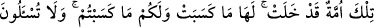

değildiniz” demektir.
Yahûdîler Peygamber (s.a.)’e: “Bilmiyor musun? Ya’kûb öldüğü gün oğullarına
Yahûdîliği tavsiye etti.” deyince bu âyet nâzil oldu. Allah Teâlâ bu âyetle: “Siz
Ya’kûb’un son ânında yanında değildiniz, ey Yahûdîler! Üstelik o oğullarına sizin
dediklerinizi değil, âyette belirtilenleri demişti. Tam tersine, size de bu sözleriyle
İslâm’a girmeyi teşvik etmektedir.” buyurmuştur.
“O zaman oğullarına: “Benden sonra neye ibâdet edeceksiniz?” dedi.” Bu sözü ile
onlara tevhîd ve İslâm inancı üzerinde kalacaklarını onaylatmak ve bu ikisi üzerinde
devam edeceklerine dâir söz almak istemiştir.
Râğıb el-Isfahânî şöyle der: “Burada “İbâdet” sözü ile bilinen farz ibâdetler
kasdedilmedi. Bütün fiillerde gayenin Allah’ın rızasına ulaşmak veya O’na ulaştırmayan
her şeyden uzaklaşmak mânâsı kasdedildi. Sanki onları Allah’ın isteği dışında hiçbir
şeyle uğraşmamaya çağırdı. Ya’kûb, onların putlara tapmasından korkmamış fakat dünyâ
ile meşgul olup Allah’ı unutmalarından korkmuştur. Bu sebeble de: “Seni Allah’dan
uzaklaştıran her şey tağuttur.” denmiştir. Bu yüzden Hz. İbrâhîm “Rabbim, beni ve
oğullarımı putlara tapmaktan uzaklaştır.” (İbrâhîm, 14/35) diye duâ etmişti.
Duâdaki, putlara tapmak Allah’dan başka şeylere hizmet etmek şeklinde tefsir
edilmiştir. Nitekim Mesnevî’de gelmiştir:
Dünyâ nedir? Dünyâ Hakk’tan gâfil olmaktır.
Yoksa, ne kumaş, ne para, ne evlâd, ne de kadındır.
Âyette Ya’kûb (a.s.)’un oğullarına: “Benden sonra kime kulluk edeceksiniz?” şeklinde
değil de “Neye kulluk edeceksiniz?” şeklinde sorması, mutlak hüküm ihtivâ etmektedir.
Çünkü “ne” mânâsına gelen “mâ” sorusu akıl sâhibi ve akıl sâhibi olmayanlar için
kullanılır. Sadece akıl sahibleri için “kim” anlamındaki “men” kullanılır. Teftâzânî
böyle demiştir.
“Benden sonra neye ibâdet edeceksiniz?” âyetiyle Yahûdîler’in iddiâsı reddedilmiş
oldu. Sonra olayın onların zannettiğinin aksine meydana geldiği açıklanmaya başlandı.
Onların iddiâları reddedilince sanki “Öyleyse ne dediler?” sorusuna karşılık:
Varlığında, tanrılığında ve kendisine ibâdetin farzlığında birleşilen, “Senin ataların
İbrâhîm, İsmâîl ve İshâk’ın mâbûdu olan tek Allah’a ibâdet edeceğiz. Biz O’na teslim
olanlarız.” dediler şeklinde cevap verilmiştir. İsmâîl (a.s.), Ya’kûb’un amcası olmasına
rağmen, dedeyi ve babayı tağliben; üstün sayarak baba diye anıldı. Çünkü anne-babanın
yokluğunda amca baba yerine, teyze de anne yerine geçer. Peygamber (s.a.)’ın şu hadisi
de bunu ifâde eder: “Kişinin amcası babasının benzeridir.”[25] Yâni, hurma ağacının
dalları arasında fark bulunmadığı gibi, aralarında fark yoktur. “Tek İlâh” denilerek
tevhid inancı açıkça vurgulanmıştır.